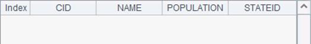
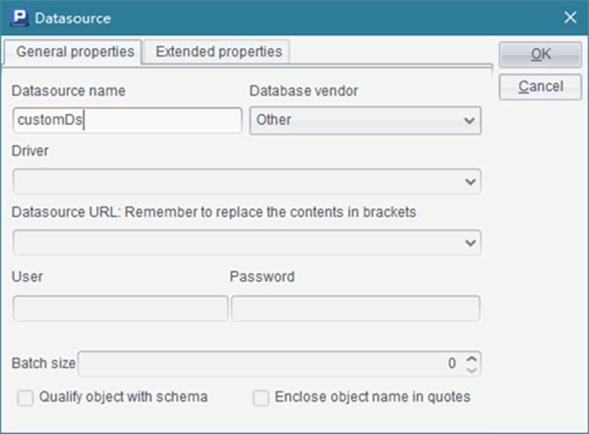
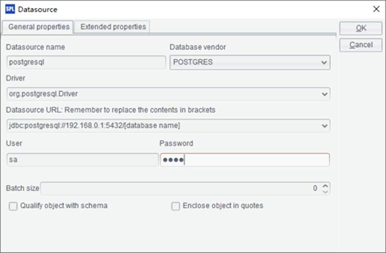
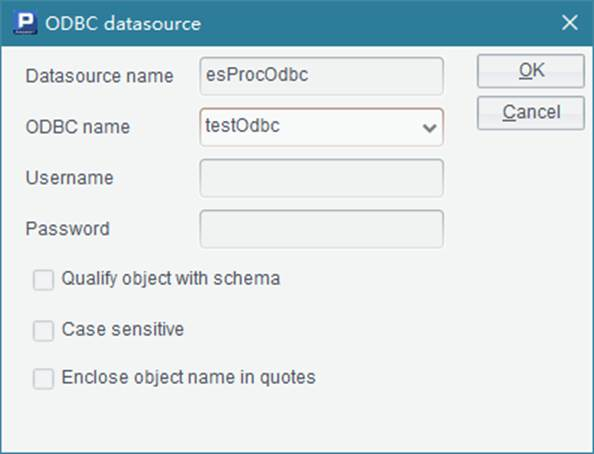

To connect to a relational database, follow these steps:
1) Click Datasource connection on Tool options menu to open the datasource manager;
2) Click New to create a data source and select its type.


3) Select information like database type and charset, and set connection parameters for the datasource and name them.

4) Connect to the database. The datasource manager will display the result of connection and supports connecting to multiple databases at one time.

esProc has the built-in system data source – demo, which can be launched through Start -> AllProgram -> esProc -> , or by running startDataBase.bat which is located in esProc\bin in IDE installation directory.
esProc¡¯s Integrated Development Environment (IDE) provides JDBC configuration prompts for various databases. You need to prepare these databases¡¯ JDBC drivers, which are provided by database vendors, and place them in \common\jdbc in esProc¡¯s IDE installation directory.